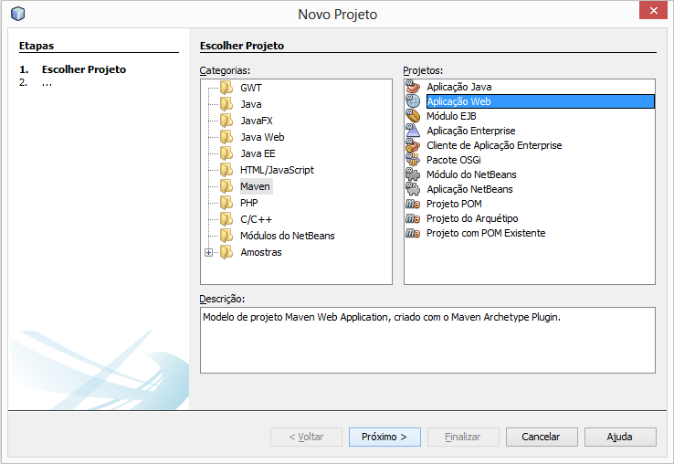
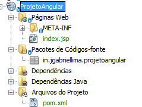

Este é um projeto exemplo do uso da arquitetura AngularJS + VRaptor + Hibernate + MySQL.
AngularJS é um dos mais novos lançamento do time de desenvolvedores do Google. Diferentemente de outros frameworks JavaScript, ele adota uma abordagem mais ligada à sintaxe HTML, funcionando como uma espécie de extensão da linguagem.
VRaptor é um framework MVC web para desenvolvimento Java rápido. Criado em 2003 no IME-USP, teve sua versão 2.0 lançada em 2005 e a versão 3.0 em 2009. Esta última versão conta com mais de 30 mil downloads. Atualmente mantido pela Caelum e diversos desenvolvedores de outras empresas. Para um rápido uso do VRaptor, baixe o projeto vazio (blank-project) e importe-o pelo Eclipse. O VRaptor3 é um framework MVC em Java focado no desenvolvimento rápido e simples, e na fácil manutenção do código. Usando muitas idéias e boas práticas que surgiram nos últimos anos, como Convenção sobre Configuração, Injeção de Dependências e um modelo REST, você pode fazer sua aplicação com este framework de uma maneira bastante agradável e produtiva. É também uma iniciativa brasileira, nascida dentro da Universidade de São Paulo, usada em muitas empresas.
Primeiramente, vamos criar um projeto web Maven (http://pt.wikipedia.org/wiki/Apache_Maven) como mostrado na figura 1. Configure os campos de ‘Nome do Projeto’, ‘Localização do Projeto’ e os demais campos se desejar. Após gerado a estrutura do projeto será como apresentado na figura 2


Com o projeto pronto, vamos analisar o arquivo ‘pom.xml’ localizado em uma pasta ‘Arquivos do Projeto’, que descreve o projeto que será construído, suas dependências sobre módulos e componentes externos, a ordem de compilação, diretórios e plug-ins necessários. Ele vem com objetivos prá-definidos para realizar certas tarefas bem definidas como compilação de código e seu empacotamento.
Na tag ‘dependencies’ você deverá substituir por:
Após essa etapa, vamos clicar com o botão direito do mouse no projeto e escolher a opção ‘Construir com Dependências’, desta forma o projeto será atualizado e as dependências serão construídas.
A única configuração necessária no web.xml é o filtro do VRaptor:
vraptor
br.com.caelum.vraptor.VRaptor
vraptor
/*
FORWARD
REQUEST